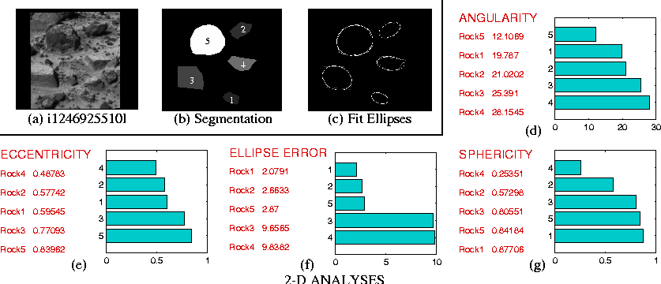

This lab is about region description, and as an example you are to analyse
an image of the Martian landscape taken by the Mars Rover.
The chart below shows some results taken from the paper titled
Onboard autonomous rock shape analysis for Mars Rovers
from the Jet Propulsion Lab.

The original image of rocks has been segmented (see figure a & b above). I have labelled each rock with a different value (200, 201, .., 204). For each rock calculate from the segmented image (i.e. you can ignore the original grayscale image) its compactness and centroid. You can count the boundary pixels to estimate the region's perimeter. Also, calculate the first two rotation, translation, and scale (RTS) invariant moments.
For example, for region ID 200, the centroid is (81.512 21.595), the first two invariant moments are: 0.184, 0.008. Perimeter can be estimated as 95, which with area = 375, gives compactness = 24.